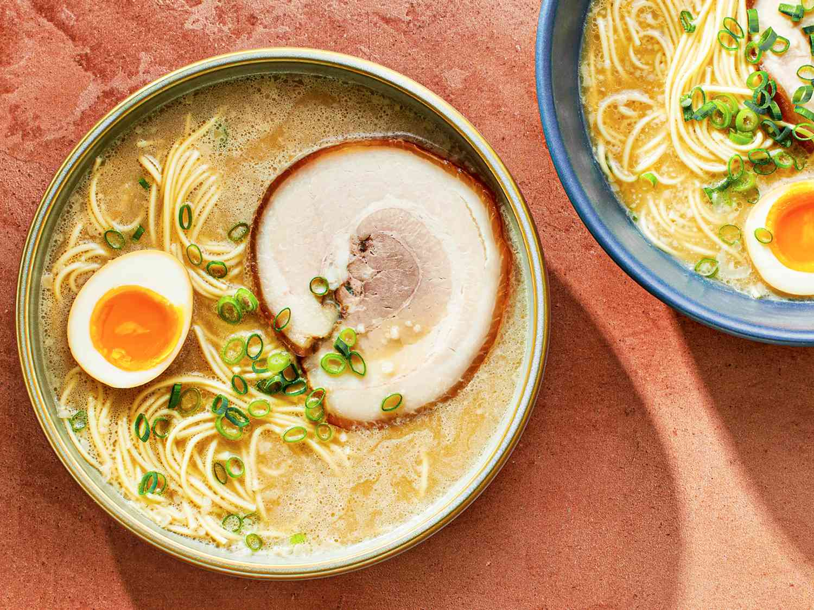

Tonkatsu Shoyu Ramen

Description
Tonkotsu ramen is a deliciously creamy pork bone broth traditionally served up with
long thin noodles and topped with a variety of ingredients. In Japanese, the word
ton translates to pork and kotsu to bone.
- 3 pounds Pig Trotters
- 2 pounds Chicken
- 2 tbps Vegetable Oil
- 1 pc Large Onion
- 12 pc Garlic Cloves
- 1 pc 3-inch knob ginger, roughly chopped
- 2 whole leeks, washed and roughly chopped
- 2 doz scallions
- 6 oz whole mushrooms
- 1 lb slab pork fat back
Steps:
- Place pork and chicken bones in a large stockpot and cover with cold water.
Place on a burner over high heat and bring to a boil. Remove from heat as
soon as boil is reached.
- While pot is heating, heat vegetable oil in a medium cast iron or non-stick
skillet over high heat until lightly smoking. Add onions, garlic, and ginger.
Cook, tossing occasionally until deeply charred on most sides, about 15
minutes total. Set aside.
- Once pot has come to a boil, dump water down the drain. Carefully wash all
bones under cold running water, removing any bits of dark marrow or
coagulated blood. Bones should be uniform grey/white after you've scrubbed them.
Use a chopstick to help remove small bits of dark marrow from inside the trotters or near the chicken's spines.
- Return bones to pot along with charred vegetables, leeks, scallion whites, mushrooms, and pork fatback. Top up with cold water. Bring to a rolling boil over high heat, skimming off any scum that
appears. (This should stop appearing within the first 20 minutes or so.) Use a clean sponge or moist paper towels to wipe any black or gray scum off from around the rim of the pot. Reduce heat to a bare simmer and place a heavy lid on top.
- Once the lid is on, check the pot after 15 minutes. It should be at a slow rolling boil. If not, increase or decrease heat slightly to adjust boiling speed. Boil broth until pork fatback is completely tender, about 4 hours. Carefully remove pork fat with a slotted spatula. Transfer fatback to a sealed container and refrigerate until step 7. Return lid to pot and continue cooking until broth is opaque with the texture of light cream, about 6 to 8 hours longer, topping up as necessary to keep bones submerged at all times. If you must leave the pot unattended for an extended period of time, top up the pot and reduce the heat to the lowest setting while you are gone. Return to a boil when you come back and continue cooking, topping up with more water as necessary.
- Once broth is ready, cook over high heat until reduced to around 3 quarts. Strain through a fine-mesh strainer into a clean pot. Discard solids. For an even cleaner soup, strain again through a fine-mesh strainer lined with several layers of cheesecloth. Skim liquid fat from top with a ladle and discard.
- Finely chop cooked pork fatback and whisk into finished broth. To serve, season broth with condiments of your choice (salt, soy sauce, miso, sesame paste, grated fresh garlic, chili oil or a mixture of all, for instance) and serve with cooked ramen noodles and toppings as desired.
Back to Top
Return to main page